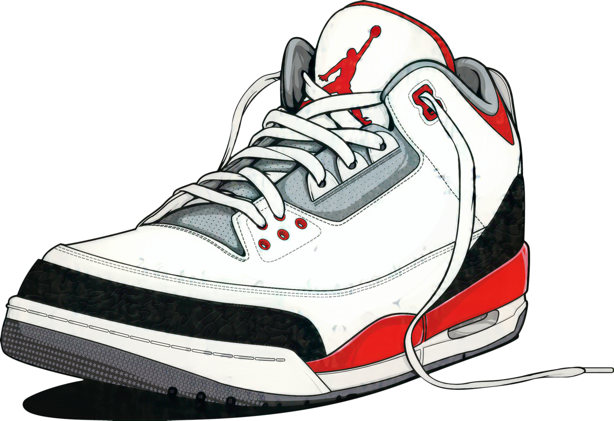

This project was created during my training. Initially, it was just a project to learn frontend technology. But later, I decided that I wanted to write a fully functioning website with a backend part.
This project shows my learning process of web development starting with HTML, CSS and JavaScript and ending with Python using Django framework.
